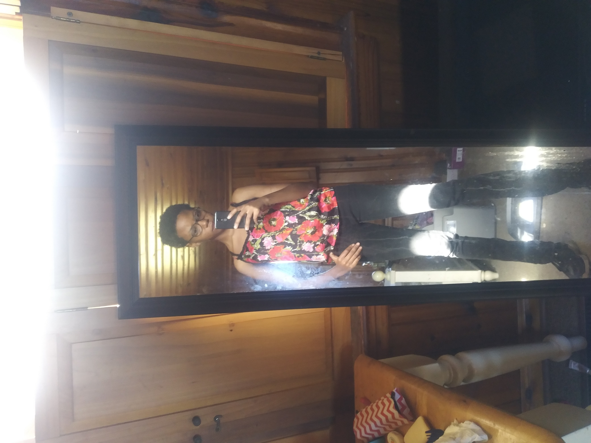

Background
My journey into graphic design is a little bit of a long one. I actually did not want to go into designs until adulthood, even though drawing and writing have always been a hobby since I was in high school. Even then my drawings were freelance sketching and poetry from time to time. I never saw it as a future career. So, what turned a hobby into a passion? After I took a year off from school, I started taking drawing requests online. That was my first exposure to drawing digitally and it helped me bring my drawings to the next level. The requests gave me a little bit of a glimpse of what graphic designers do for a living. After that, I realized how much I was enjoying it. I decided to return to Wake Tech and major in Graphic design. After taking two classes associated with the degree, that is when I decided to continue the degree in Graphic Design. A couple weeks into the classes is around the same time that the passion developed for it. So I decided to turn it into a career and hopefully open my own design company one day. Even though, I am not sure what specialty I want to go into it.